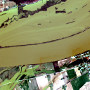
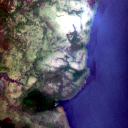
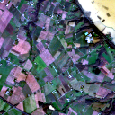

Autonomous Water Segmentation
Upload a raw 12-channel Sentinel-2 GeoTIFF or standard optical image. The model calibrates surface reflectance across optical, RedEdge, NIR, and SWIR bands to output pixel-level water boundaries.
Prepackaged Validation Scenes (1-Click Verification)

Sample 1: Inland Lake / Reservoir
High water coverage (76.90%) scene capturing an expansive open water reservoir with sharp littoral boundaries.

Sample 2: Meandering River & Shoreline
Moderate water coverage (35.28%) featuring river channel curvature, vegetative banks, and mixed shoreline transitions.

Sample 3: Narrow Streams & Wetland
Low water coverage (8.02%) challenging thin tributaries, marshland, and fine spatial details near the pixel resolution limit.
Drag & drop Sentinel-2 raster image here
Supports 12-Band GeoTIFF (.tif) or optical imagery (.png / .jpg)
Inference Controls
Default τ = 0.50. Lower values detect thin streams; higher values eliminate shoreline noise.
format=image downloads the raw binary PNG mask stream with custom headers.
Multispectral Inference Output
Surface reflectance composite stretched for human inspection.
White (255) indicates classified open water surface.
Neon cyan water overlay with morphological shoreline borders.